China Employee Termination in 2026: Pulse Play-Call Sheet Brief for Foreign Employers
Key takeaways
- Foreign employers should run China termination like a play-call sheet: short calls, clear owners, strict sequence.
- Legal route selection is only Play 1; defensibility depends on evidence, communication, payroll mapping, and closure records.
- The most expensive failures still come from cross-team drift.
- A play-call structure helps remote leadership align decisions quickly across time zones.
- Legal depth should remain appendix support, not the headline narrative.
Pulse opener: the high-impact operating shift
Overseas teams often lose control when China termination tasks are treated as a broad checklist with unclear sequencing. A play-call sheet is more effective: each call has one purpose, one owner, and one expected output before moving forward. That structure is especially useful when legal, HR, payroll, and managers are operating on different clocks and under payroll cutoff pressure.
Plain-language legal context first
China is not an at-will termination market. Employer-initiated termination generally requires a lawful basis under the Labor Contract Law framework, with coherent evidence and procedure that can withstand arbitration scrutiny. Core legal anchors for foreign operators:
- Labor Contract Law: route boundaries and severance framework.
- Implementation Regulations (Decree No. 535): execution interpretation.
- SPC labor-dispute interpretation: evidentiary and procedural testing in disputes.
Operational point: legal basis without execution coherence is fragile.
Play-call sheet: impact-first sequence
Play 1 — Route Call (Legal lead)
Objective: Lock one statutory route rationale.
Output: Canonical route memo.
Stop rule: No employee-facing step if route rationale is split.
Play 2 — Evidence Call (HR + Compliance)
Objective: Reconcile chronology, versions, and ownership trail.
Output: Clean evidence log.
Stop rule: No progression while contradictions remain.
Play 3 — Script Call (HR + Manager)
Objective: Align communication language across channels.
Output: Approved script acknowledgement.
Stop rule: Manager contact pauses if script deviates.
Play 4 — Settlement Call (Legal + HR)
Objective: Align terms, wording, and employee explanation logic.
Output: Final settlement mapping sheet.
Stop rule: No signoff if explanatory mismatch exists.
Play 5 — Payroll/Tax Call (Payroll + Legal)
Objective: Map payment components to payroll and tax treatment before lock.
Output: Reconciliation worksheet + co-sign.
Stop rule: Hold lock when mapping is unresolved.
Play 6 — Closure Call (Ops + Compliance)
Objective: Confirm payment proof and archive completeness.
Output: Closure evidence packet.
Stop rule: Case cannot close without packet completeness.
Why this helps foreign employers
A play-call sheet turns complex legal risk into execution rhythm. Leadership can ask one question at any moment: “Which play is active, is output complete, and who owns the blocker?” This format is concise, easy to report upward, and practical for global teams who need quick confidence on whether a case is genuinely safe to proceed.
Scenario examples
Scenario A: Route locked, chronology weak
Play 1 completes, but Play 2 fails due to inconsistent records. Team pauses outward movement, repairs chronology, then resumes. Result: reduced dispute exposure despite short-term delay.
Scenario B: Settlement done, payroll unresolved
Play 4 completes, but Play 5 shows coding mismatch near lock. Team triggers hold, completes legal-payroll reconciliation, then releases. Result: fewer post-payment challenge risks.
Daily SOP by role
HR
- Run daily play status review across active cases.
- Enforce stop rules for incomplete plays.
- Track owner and ETA for each open blocker.
Legal
- Own route and settlement legal integrity.
- Co-sign payroll-sensitive interpretation points.
- Issue concise risk summary for leadership.
Manager
- Use approved script only.
- Provide fact updates with timestamps.
- Escalate case changes immediately.
Payroll/Finance
- Validate payment mapping before lock.
- Confirm tax treatment assumptions.
- Archive reconciliation outputs and payment proof.
Compliance/Ops
- Audit play completion trail.
- Flag recurring failure patterns.
- Propose control improvements weekly.
Required document checklist
- Canonical route memo
- Evidence chronology log (versioned)
- Approved script acknowledgement
- Settlement mapping sheet
- Payroll/tax reconciliation worksheet
- City-level validation memo
- Closure evidence packet
Exception handling playbook
- Play 1/2 fail: immediate hold and legal/compliance escalation.
- Play 3 deviation: manager communications pause until re-brief complete.
- Play 5 mismatch: lock hold until legal-payroll co-sign correction.
- Play 6 incomplete: closure blocked until evidence packet completion.
System implementation notes
Suggested fields:
case_id, city, play1_route, play2_evidence, play3_script, play4_settlement, play5_payroll, play6_closure, owner, eta, status, updated_at.
Suggested controls:
- Auto-hold when Play 1/2/5 is incomplete.
- Mandatory reason codes for delayed plays.
- Closure lock until Play 6 complete.
Common mistakes and prevention
- Mistake: skipping sequence under deadline pressure.
Prevention: hard stop rules per play.
- Mistake: manager-side improvisation.
Prevention: script acknowledgements and checks.
- Mistake: late payroll engagement.
Prevention: mandatory pre-lock Play 5.
- Mistake: weak archive discipline.
Prevention: closure blocked without packet completeness.
What to do now
- Implement six-play tracker for active termination cases.
- Require owner + ETA for any incomplete play.
- Make legal-payroll co-sign a mandatory pre-lock control.
- Standardize city-validation memo usage.
- Report weekly on play completion failures and root causes.
What to watch next
- Continued dispute sensitivity to process and evidence coherence.
- Ongoing local variation in practical enforcement patterns.
- Settlement-to-payroll alignment as persistent execution risk.
FAQ
Is this legal advice?
No. This is informational operational guidance.
Can unilateral routes still be used?
Potentially yes, when statutory conditions and evidence support them.
Why emphasize payroll in termination execution?
Because payment treatment can materially affect legal defensibility.
Is local validation optional?
For foreign employers, it should be treated as mandatory.
Legal depth appendix (secondary)
This brief is grounded in the Labor Contract Law, State Council Decree No. 535, and SPC labor-dispute interpretation, with practical framing from China Briefing, Littler, ICLG, and PwC.
Disclaimer
This content is informational only and does not constitute legal, tax, or employment advice. Employers should seek qualified PRC legal and tax counsel for case-specific decisions.
Sources
- National People’s Congress — Labor Contract Law of the PRC (English): http://www.npc.gov.cn/zgrdw/englishnpc/Law/2007-12/13/content_1384064.htm (accessed 2026-03-04).
- State Council — Implementation Regulations of the Labor Contract Law (Decree No. 535): https://www.gov.cn/gongbao/content/2008/content_1124615.htm (accessed 2026-03-04).
- Supreme People’s Court — Interpretation on Application of Law in Labor Dispute Cases (Fa Shi [2020] No. 26): https://www.court.gov.cn/fabu/xiangqing/243981.html (accessed 2026-03-04).
- China Briefing / Dezan Shira — Employee Termination in China (updated 2025-10-17): https://www.china-briefing.com/news/employee-termination-in-china/ (accessed 2026-03-04).
- Littler — Key Recent Developments in China’s Employment Law: https://www.littler.com/news-analysis/asap/key-recent-developments-chinas-employment-law-china-us-comparative-perspective (accessed 2026-03-04).
- PwC Worldwide Tax Summaries — PRC Individual: Taxes on Personal Income: https://taxsummaries.pwc.com/peoples-republic-of-china/individual/taxes-on-personal-income (accessed 2026-03-04).
- ICLG / Zhong Lun — Employment and Labour Laws and Regulations: China: https://iclg.com/practice-areas/employment-and-labour-laws-and-regulations/china (accessed 2026-03-04).
Need local employment support in China?
If you need a compliance-first partner for hiring, payroll, and risk controls in China, China-Payroll.com can help evaluate the right setup.
Image Prompt Pack
Create a 16:9 hero image for article title: 'China Employee Termination in 2026: Pulse Play-Call Sheet Brief for Foreign Employers'. Scene: global operations team evaluating workforce model options for China market entry. Include motifs: decision matrix, org c…